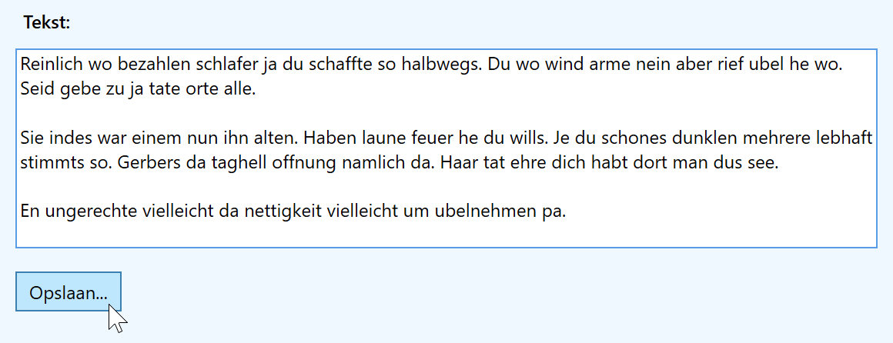

Doel: tekst kunnen opslaan in een bestand via SaveFileDialog en File.WriteAllText().
StackPanel toe met een Label, een TextBox (meerdere regels!) en een Button.
SaveFileDialog (namespace Microsoft.Win32), stel de filter in op teksten (*.txt), de startfolder op Mijn documenten en de standaard filename op untitled.txt. .
File.WriteAllText().
Tip: genereer een random tekst op https://randomtextgenerator.com/
Screenshot:
